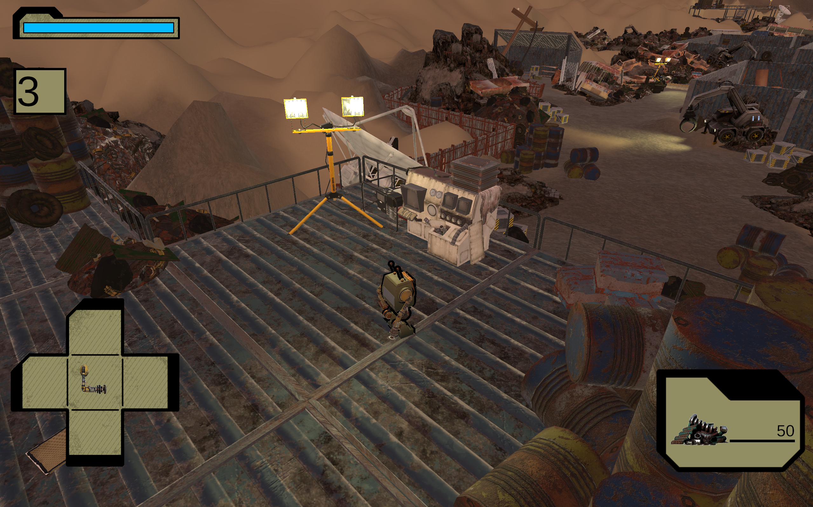
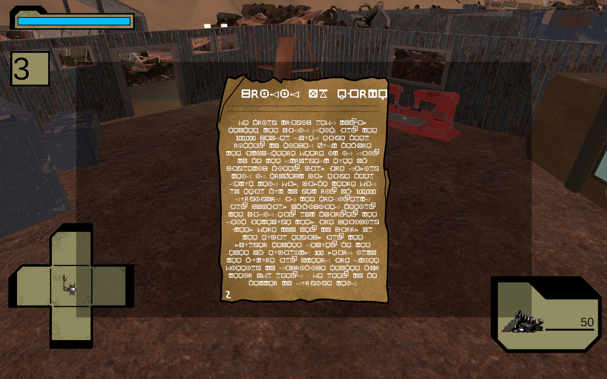
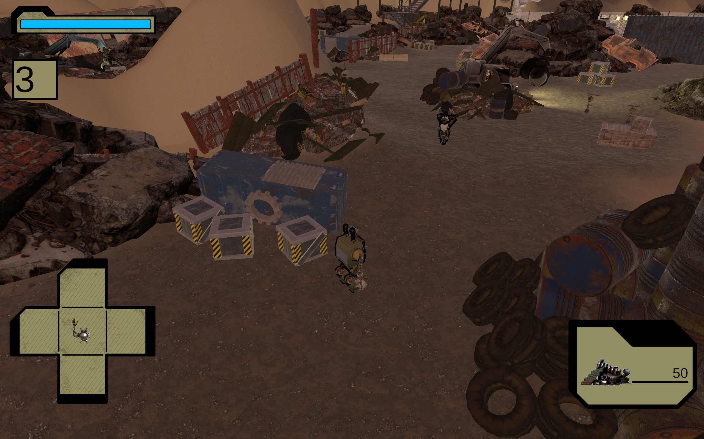
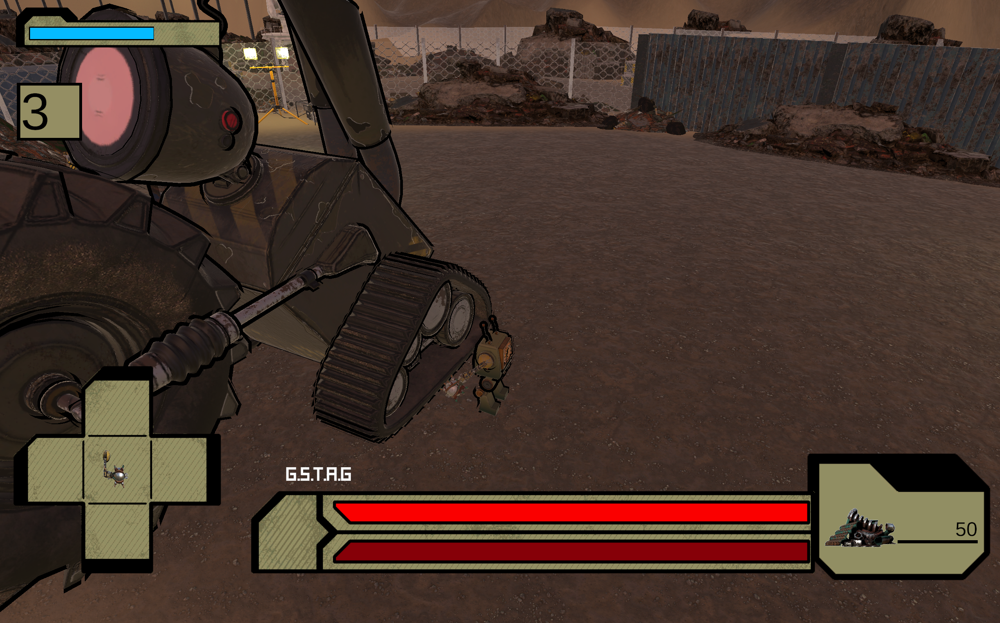
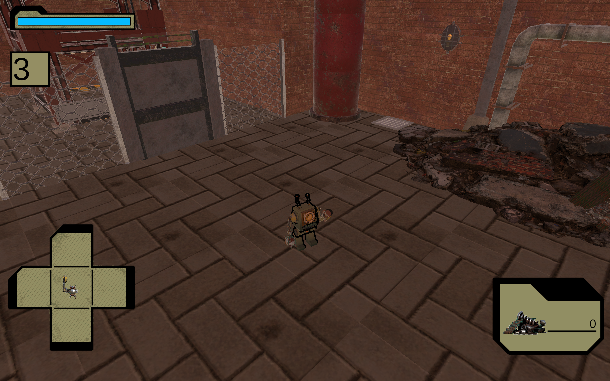
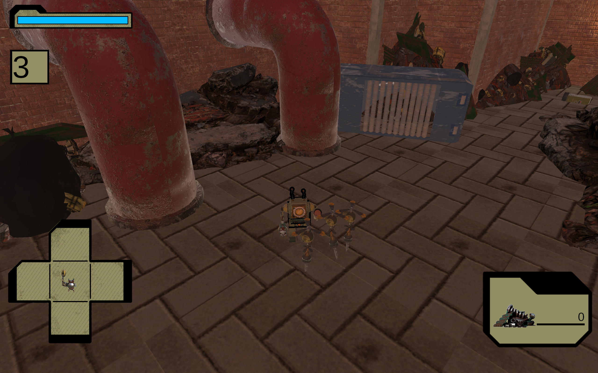

"Scrap Forge" is an Isometric 3D Action-Adventure, Souls-like game set on a forgotten planet, collapsed and filled with junk.
Players take on the harsh world as a robot called "SCR4-P1" (also known as "Scrappy") who has crash landed on the desolate planet. Scrappy and by extension the player must explore and learn about the planet's past to find parts and repair their ship. Although this won't be easy, other robots whether being relics of the past or those who have also ended up trapped here scour the planet in search of fresh parts they can use to upgrade their now rusty exteriors.
Luckily, Scrappy is capable of crafting weapons, upgrades and supplies that the player can use in combat or to enhance their abilities. In a world where everything is against you and the odds of surviving are almost zero.
Can you get Scrappy home?
The official Scrap Forge trailer
In game screenshot, taken at the beginning of the game

In game screenshot, shows the player on a vantage point

In game screenshot showing the UI of a data log the player will decipher across their playthrough

In game screenshot of the first enemy encounter

In game screenshot taken during the G-Stag boss fight

In game screenshot showing the entrance of the Factory level

In game screenshot showing an enemy encounter in the Factory level
My Responsibilities
- Responsible for managing the design of the game and my team of 22 other designers
- Responsible for solving team and design conflicts
- Responsible for organising game design documentation and providing the team with a structure to follow
- Responsible for conveying design ideas to both the art and development cohorts to capture and create the vision the design team had in mind
- Responsible for giving weekly progress presentations to the team and stakeholders
- Responsible for ideating, designing, blocking out and playtesting levels 1 and 2
- Alongside another designer, we were responsible for designing the games camera and conveying our ideas to the development team
Contact Me
I would love to chat! Feel free to contact me using the information below